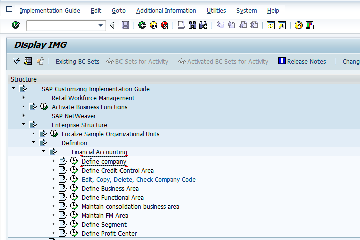
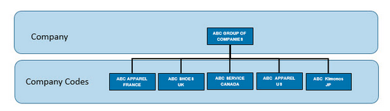
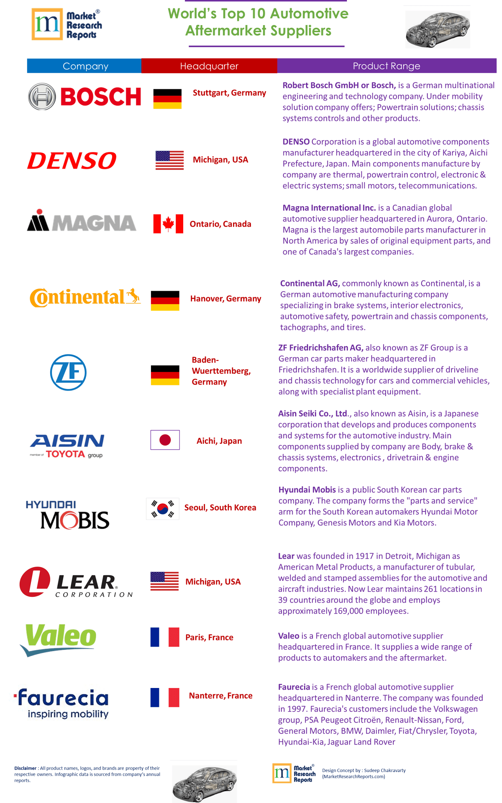
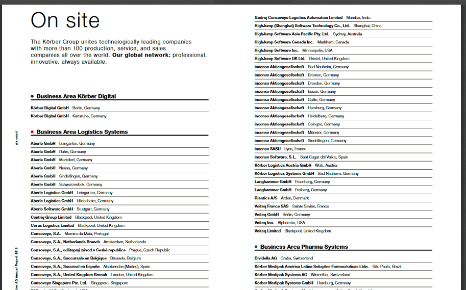
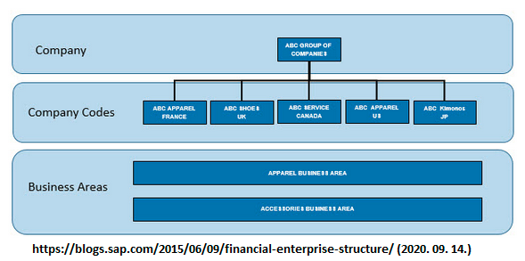
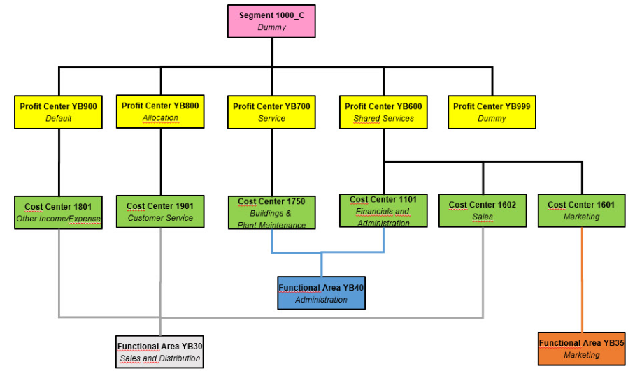
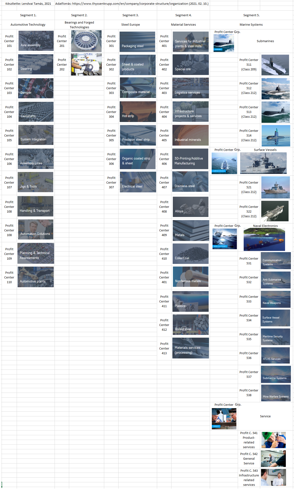
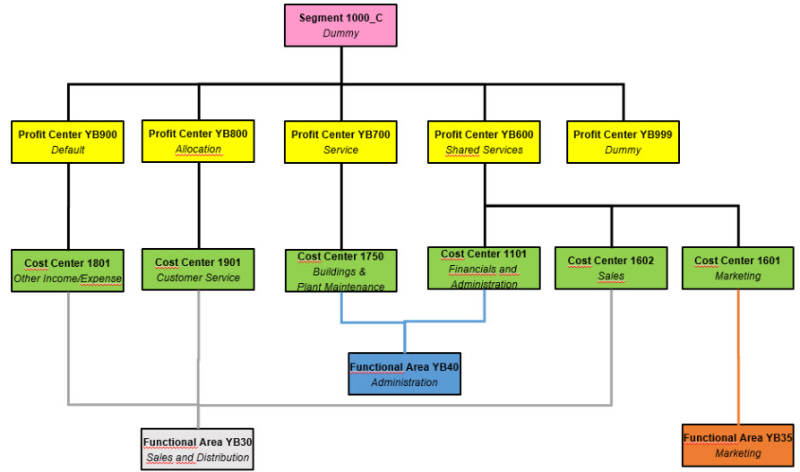
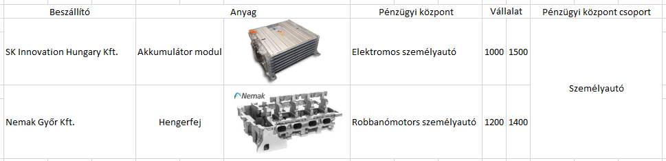

Pénzügyi és vezetői számviteli környezet felépítése SAP-ban

A szeminárium során elsősorban felhasználói tranzakciókat használunk, azonban lényegesnek tartjuk megemlíteni és igény esetén szemléltetni a pénzügyi és a vezetői számvitel környezetének objektumait, illetve lehetőséget adni azok létrehozására. Az alábbi ismeretek azoknak igazán hasznos, akik szeretnék érteni, hogy milyen szervezeti tényezők, szervezeti egységek szerepelnek a könyvelési folyamatok hátterében, azokat hogyan lehet beállítani, illetve milyen környezetet lehet kialakítani. Más tekintetben a felhasználói szint szempontjából a kontírozási, hozzárendelések miatt lényegesek.
Elöljáróban megállapítható, hogy az SAP rendszerekben (ERP R/3, S/4 HANA) két eltérő funkciójú, mégis több szálon kapcsolódó szervezeti környezet működhet részben egymással kapcsolatban, részben párhuzamosan. Az egyik a Financial Accounting, tehát a Pénzügyi Számvitel, amelynek alapvető feladata a külső környezet szereplőinek, pl: adóhatóságok, pl.: NAV tájékoztatása a vállalat, vagy annak egységeinek vagyoni helyzetéről mérleg-, eredmény és pénzügyi beszámolók formájában. Ennek a környezetnek a klasszikus részét a Business Area, Consolidated Business Area és részben a Segement adja. Ezzel szemben a Controlling modul a belső tájékoztatást látja el, a vállalat valós teljesítményéről ad számot a menedzsmentnek. Ebben az esetben Controlling Area-ban elhelyezkedő, eredmények kimutatását lehetővé tevő Profit Center, valamint az ez alatt lévő, költségeket gyűjtő Cost Center-ek szerepelnek. A helyzetet az bonyolítja, hogy a Business Area (FI) alá tartozhat Cost Cenrer, a Segment alá pedig Profit Center és Cost Center. Tehát a két eltérő funkciójú szervezeti objektumok összekapcsolhatók.
Vállalatcsoport (Company) / Kliens (Client)
Az SAP rendszerben két, egymással vertikális kapcsolatban álló vállalati szint különíthető el. A felső szintet a vállalatcsoport (Company), az alsó szintet a vállalat (Comapny Code) jelenti. Egy vállalatcsoportban több egymással azonos, mellérendelt, horizontális szinten lévő vállalat helyezkedik el. A magasabb szint a vállalatcsoport), az alacsonyabb szint a vállalat. A vállalatcsoportba, amely több országban, esetleg kontinensen is tevékenykedik - pl. ThyssenKr*pp - tartoznak a vállalatok. Company szinten lehet benyújtani pl.: konszolidált pénzügyi beszámolót. Ezzel szemben a vállalatok Company Codes) azok a jogi entitások, amelyekre az adott ország jogszabályai vonatkoznak, illetve amelyeknek pl.: az adóhatóságoknak kell adatszolgáltatás végezniük. SAP rendszerben elsőként a vállalatcsoportot célszerű beállítani, ha ez indokolt (pl.: azokban az esetekben, ha csak Magyarországon működik a vállalat (szervezet), pl.: PTE, illetve más felsőoktatási intézmények, nem kell megadni vállalatcsoportot, mivel ez nem releváns).

Tehát megállapítható, hogy a szervezeti hierarchia legmagasabb pontján a vállalatcsoport áll. A különböző formában, pl.: konszernként, holdingként, konglomerátumkén megjelenő vállalatcsoportok elsősorban a transznacionális és multinacionális szervezetekre jellemzők. Az ügyfél / kliens / vállalatcsoport az SAP rendszer legmagasabb hierarchikus szintjén helyezkedik. A rendszeren belül, saját adataival, törzsrekordjaival és független táblákkal rendelkezik. Üzleti szempontból az ügyfél vállalati csoportot alkot, ügyfél jogi és szervezeti szempontból is önálló. A gyökér (root) a vállalati csoport szintjét képviseli. A hierarchia összes többi csomópontjának nem kell fix szemantikával rendelkeznie. Ez azt jelenti, hogy hierarchiáját jogi személyek (például leányvállalatok) és üzleti egységek (például értékesítés) keverékével állíthatja össze.
Az alábbiakban nézzünk meg két standard, szabványos SAP szervezeti ábrát:

Figure 1: http://sapmoduletutor.blogspot.com/2015/11/sap-mm-organizational-structure-in-sap.html (2021. 02. 10.)

Példák a vállalatcsoportokra:


Figure 3: https://www.slideshare.net/VishalHarichund/20150129tkiscompanypresentationtranen (2021. 02. 10.)
Figure 4: https://blogs.sap.com/2018/03/26/sap-labs-network-the-art-of-being-connected/ (2021. 02. 10.)
Az alábbi lista a világviszonylatban is meghatározó transznacionális vállalatok egy részét tartalmazza.

Vállalat (Company Code)
A vállalatcsoport alatt helyezkedik a vállalat. A vállalat, többnyire a cégcsoport leányvállalata jogilag bejegyzett, Magyarország esetében a cégjegyzékben szereplő entitás. Ezen a szinten készülnek el az országspecifikus, az adott ország adóhatósága számára készülő, jogszabályokban rögzített jelentések.

Vállalatot (2. szint) létrehozhatunk teljesen üres állapotból, illetve átmásolhatjuk más vállalat adatait az új vállalatunkba. A második lehetőség azért előnyösebb (esetünkben), mivel a másolással minden korábbi függőségeket is átmásolhatunk, nem kell előröl minden kapcsolatot kiépíteni, tehát ez jelentős időmegtakarítás, maximum módosítani kell a függőségeket az igények szerint. Ezzel szemben az új létrehozásával valamennyi függőviszonyt (100-as nagyságrend) ki kell építeni. A függőviszony pontos megnevezése: "company code-specific parameters". SAP bevezetés esetében lehet teljesen üres állapotról kezdeni, de ha egy vállalatcsoportba több vállalat tartozik, akkor lehet, hogy célszerűbb a függőviszonyok egy részének - átgondolt - átvétele.
Üzletág a vállalatcsoport alatt (Business Area under Company)



Mint a Körber Solution példája is mutatja, megállapítható, hogy transznacionális vállalatcsoportok tevékenységüket egymástól jól elkülönült üzletágakban végzik. Lényeges, hogy egy üzletágba több leányvállalat is tartozhat, illetve egy-egy leányvállalat több üzletágban is érdekelt lehet. Ennek az összetett lehetőségnek a gazdasági események kontírozásának tekintetében lesz súlya.
Üzletág (Business Area)

Az üzletágak kialakítására az SAP standard megoldásaiban két lehetőséget ad. Az egyik lehetőség a (Segment -) Pénzügyi központ (csoport) – költséghely kombináció, a másik pedig a klasszikus Üzletág – költséghely (Business Area – Cost Center) megoldás.
Az üzletág egy adott üzleti szegmensnek vagy felelősségi körnek felel meg. A pénzügyi könyvelésbe bevitt értékmozgások üzleti területekhez vannak rendelve. Pénzügyi kimutatások (mérleg- és eredménykimutatások készíthetők üzleti területekre belső célokra. Az üzleti terület egy külön szervezeti egységet képvisel a pénzügyi könyvelésben, amely az üzleti tevékenység külön területét képviseli. Könyvelési sorokhoz rendelhető és ennek előnye, hogy ezen üzleti területek alapján belső pénzügyi kimutatást készíthetünk. Mondhatjuk, hogy belső jelentési célokra használható. Az üzleti területeket a külső szegmensjelentésekben (a vállalati kódokon felül) használják, a vállalat jelentős működési területei alapján (például termékvonalak, fióktelepek).
Az üzletágak meghatározását követően, a gazdasági események rögzítésével a főkönyvi számlák tranzakciós adatait külön lehet értékelni belső kimutatási célokból. Ezért létrehozhatunk belső pénzügyi kimutatásokat az üzleti területekre vonatkozóan. Üzleti területre való könyveléshez minden esetben meg kell adni vagy az üzletág alá tartozó költséghelyet, vagy közvetlenül magát az adott üzletágat. A Business Area előnye, hogy vállalatcsoporton belüli vállalatok között Cross-Company könyvelés esetén egy bizonylaton gyakorlatilag az összes vállalati kód különböző üzleti területeire könyvelhetünk el egy dokumentumban. Ennek eredményeként a vállalati kód és az üzleti terület tetszőleges számú kombinációja lehetséges.
Az üzletág és a pénzügyi központ közötti egyik meghatározó eltérés, hogy az üzletág célja szerint inkább beszámolási célokra szolgál, míg a profit központ lehetővé teszi a felelősségterületek elemzését és a felelősség decentralizált egységekre (pl. a vállalaton belüli különféle divíziókra) való átruházását. Így a profit központot alapvetően "egy vállalaton belüli társaságként" kezelik, és biztosítja a hatékony irányítást. Lásd.: https://answers.sap.com/questions/6828792/business-area-vs-segment.html (2021. 02. 10.)

Üzleti szegmens (Segment) / Szegmens riport (Segment report)

A szegmens a vállalkozás olyan alkotóeleme, amely saját bevételeket generál, és saját termékeket, termékvonalakat vagy szolgáltatásokat kínál. A szegmenseknek jellemzően kapcsolódó költségeik és műveleteik vannak. A szegmenseket "üzleti szegmenseknek" is nevezik. Általában, ha egy üzleti egység elkülöníthető vagy kiemelhető a vállalat egészéből, és továbbra is önellátó marad, akkor az megfelel az üzleti szegmensbe sorolás kritériumainak. Az egyes szegmensek tevékenységeire és teljesítményére vonatkozóan pénzügyi információknak kell rendelkezésre állniuk.
(Forrás: https://www.investopedia.com/terms/s/segment.asp (2021. 02. 04.)
Az üzleti szegmensek szerinti jelentések a vállalat pénzügyi adatait a részlegek, földrajzi elhelyezkedés, vagy más szegmensek szerint bontják meg. Éves beszámolóban az üzleti szegmensre vonatkozó jelentés pontos képet nyújt a vállalatcsoport részvényeseinek a teljesítményéről. A menedzsment az üzleti szegmens jelentését használja az egyes üzletágak bevételeinek, kiadásainak, eszközeinek és kötelezettségeinek értékelésére, annak érdekében, hogy kimutassa általános állapotát - ideértve a jövedelmezőséget és a lehetséges veszélyeket is. Korábban erre a célra az SAP a Business Area-t, 2010-től a Szegmenst és a Profit Center-t használja.
A szegmens bevezetésének egyik meghatározó célja az IAS 14 és az IFRS 8 szabványok szegmensjelentésre vonatkozó követelményeknek való megfelelés. Tekintettel arra, hogy ezek standardok, illetve szabványok elsősorban bevételalapúak, ezért a Pénzügyi Központok, másnéven Nyerség Központok (Profit Center) kapcsolódnak a szegmensekhez.
A szegmensjelentés tehát a Nemzetközi Pénzügyi Beszámolási Standard (IFRS) egyik követelménye, amelynek értelémében a pénzügyi információkat üzleti és földrajzi területek szerint kell nyújtani, annak érdekében, hogy egyértelműen meghatározható legyenek az ezeken a területeken rejlő lehetőségek és kockázatok. Ez a megfelelés azokra a vállalatokra vonatkozik, amelyek részvény- és hitelviszonyt megtestesítő értékpapírjaival nyilvános kereskedést folytatnak, és értékpapírokat is kibocsátanak a nyilvánosság számára. Forrás: https://answers.sap.com/questions/6828792/business-area-vs-segment.html (2021. 02. 10.)
A Pénzügyi Számviteli Standard Testület (FASB) meghatározza az üzleti szegmens jelentésének számviteli standardjait. A FASB számviteli standardok kodifikációja (ASC) 280-10-10-1 előírja, hogy a vállalat üzleti tevékenységének minden szegmense összhangban álljon a vállalat beszámolási struktúrájával. A vállalatnak azonban nem kell beszámolnia az összes üzleti szegmensről. Az Egyesült Államokban általánosan elfogadott számviteli elvek (GAAP) szerint az állami vállalatoknak jelenteniük kell egy szegmenst, ha az az összes bevétel 10% -át, az összes nyereség 10% -át vagy az összes eszköz 10% -át teszi ki. A nemzetközi szabványok némileg eltérnek. Az üzleti szegmensre vonatkozó jelentés teljes képet nyújt a társaság működéséről a részvényesek, a felső vezetés és a befektetők számára - ami fontos lehet döntéshozatalukhoz.
A szegmensjelentések segítségével a társaság részvényesei teljes képet kaphatnak a cég működéséről. A szegmensjelentés részletes perspektívát ad hozzá, amely kritikus fontosságú a felső vezetés döntéshozatala szempontjából. Az összevont mérleg- és eredménykimutatás mellett felmerülhet igény arra, hogy egy adott befektető, vagy befektetői csoport mélyebben szeretne beleolvasni a vállalat gazdasági adataiba, pl.: üzleti szegmensenként (földrajzi régiónként vagy üzletáganként) elemezni a vállalat teljesítményét.
Példa az üzleti szegmensek felépítésére

A legtöbb nagybank különféle üzleti funkcióik alapján több részlegből áll (fogyasztói hitelezés, kereskedelmi hitelezés és hitelkártya). A bank pénzügyi kimutatásainak összeállításakor a pénzügyi tisztviselőnek el kell különítenie mindhárom ilyen divíziót jövedelemtételeik, valamint a mérlegben felsorolt eszközök tekintetében.
Kapcsolódás SAP-ban:
SAP rendszerben a szegmenshez közvetlenül a pénzügyi központ kapcsolódhat, amelyhez pedig közvetlenül kapcsolódhat a költséghely.
Pénzügyi központ, vagy más néven nyerségközpont (Profit center).

A pénzügyi központ csoportok és pénzügyi központok egy adott üzletág, üzleti terület alatt helyezkednek el. A vezetői számvitel részének tekinthető pénzügyi központok lényeges tulajdonsága, hogy a vállalat belső területeiként felelősek a megcélzott nyereség és / vagy a termelékenységi célok eléréséért. A pénzügyi központba a költséghelyekről érkező költségek és a pénzügyi központba közvetlenül érkező bevételek tartoznak. A pénzügyi központok vállalaton belül vállalatként is lehet értékelni.
A pénzügyi központ hierarchia a vezetői számvitel szervezeti egysége, amely tükrözi a szervezet vezetésorientált struktúráját a belső ellenőrzés céljából. A pénzügyi központ célja egy adott termékcsalád, üzem vagy üzleti egység bevételeinek és költségeinek elemzése. Pénzügyi központok szerint lehet készíteni mérleg- és eredménykimutatásokat, azonban ezeket a kimutatásokat alapvetően belső célokra lehet felhasználni. A Profit Center könyvelése a belső felelősségi körök nyereségének meghatározására szolgál. Ez lehetővé teszi, hogy meghatározza a nyereséget és a veszteséget akár az időszaki elszámolás, akár az értékesítési költség megközelítés segítségével.
Egy másik megközelítés szerint pénzügyi központok / nyereségközpontok hozhatók létre a termékvonalak, részlegek, földrajzi régiók, irodák, gyártási helyek vagy funkciók azonosítására. A nyereségközpontokat belső ellenőrzési célokra használják, amelyek lehetővé teszik a menedzsment számára a szervezetükön belüli felelősségi területek felülvizsgálatát. A költséghely és a nyereségközpont közötti különbség az, hogy a költségközpont az adott időszakban felmerült egyedi költségeket jelenti. A pénzügyi központ biztosítja azoknak a jövedelmezőség jelentési követelményeit, amelyek nem illeszkednek a vállalati kód szerkezetéhez. (Forrás: https://www.apprisia.com/blog/sap-ecc/sap-profit-center-accounting/ )
Investopedia meghatározása szerint:
Egy másfajta megközelítés szerint a pénzügyi központ egy olyan egység, amely felelős a bevételeinek előteremtéséért. Nyereségét és veszteségét a vállalkozás egyéb területeitől elkülönítve számolják. A profitközpont egy olyan fióktelep vagy részleg, amely közvetlenül növeli a vállalat nyereségességét. A profitközpontot olyan egységként kezelik, amely a bevételeket önállóan számolják el. A profitközpontokért felelős vezetők vagy vezetők döntési jogkörrel rendelkeznek a termékek árképzésével és a működési költségekkel kapcsolatban. Más tekintetben jelentős nyomásnak vannak kitéve, mivel biztosítaniuk kell, hogy részlegük termékekkel vagy szolgáltatásokkal történő értékesítése meghaladja a költségeket. A profit termelés történhet a bevételek növelésével és / vagy a költségek csökkentésével.
Investopedia példái:
A Walmart kiskereskedőnél a különböző termékeket értékesítő különböző részlegeket elemezni lehet profitközpontokra. Például a ruházat egy nyereségközpontnak tekinthető, míg a háztartási cikk második nyereségközpontnak. Ezenkívül a szezonálisan váltakozó részlegeket, például a kertközpontot vagy az ünnepi dekorációval foglalkozó részlegeket profit-központként lehet vizsgálni, hogy elkülönítsék e részlegek szezonális járulékát az egész éves hozzájárulással rendelkezőktől.
A Microsoft informatikai óriás a profitközpontokkal sokféle területen rendelkezik, a hardvertől a szoftveren át a digitális szolgáltatásokig. Ezen nagy bevételi források elemzése során a vállalat dönthet úgy, hogy elkülöníti a Windows operációs rendszerének értékesítéséből származó pénzeszközöket más szoftvercsomagoktól, például a Microsoft Office-tól vagy más hardverszektoroktól, például az Xbox játékkonzoltól. Ez lehetővé teszi a különböző termékek jövedelmezőségének vizsgálatát és összefüggését a kapcsolódó költség- és bevétel-összehasonlítások alapján.
A profitközpont koncepciója az optimális erőforrás-allokáció és jövedelmezőség megkönnyítésére szolgál. A profit optimalizálása érdekében a menedzsment dönthet úgy, hogy több erőforrást allokál a nagyon jövedelmező területekre, miközben csökkenti az allokációkat kevésbé jövedelmező vagy veszteséget okozó egységekre.
(Forrás: https://www.investopedia.com/terms/p/profitcentre.asp )
Kapcsolódások: a pénzügyi központok pénzügyi központ csoportba sorolhatók, valamint besorolhatók szegmensekbe is.
Szervezeti felépítés:

Figure 5: https://www.slideshare.net/bnanduri/profit-centeraccounting-50622317 (2021. 02. 06.)
SAP pénzügyi központ felépítése:
SAP rendszerben a pénzügyi központok pénzügyi központ csoportba sorolhatók. Az alábbi ábra szerint a járművek pénzügyi központ csoportba tartozik a motorkerékpár és a személyautó. Ezeket tovább lehetne bontani: robbanómotoros személyautó, elektromos személyautó, robbanó motoros kerékpár, elektromos motorkerékpár. Az egyik kérdés az, hogy milyen szinten szeretnénk mérni a nyereséget.

Lényeges, hogy egy adott pénzügyi központhoz több vállalati kód is kapcsolódhat. Tehát például a motorkerékpár gyártásban több vállalat is részt vehet. A beszerzés szempontjábók az alábbi egyszerű példát nézzük át.

Költséghely, költségközpont (Cost Center). A költséghely egy szervezeten belüli részleg vagy funkció, amely közvetlenül nem növeli a nyereséget, de működtetése mégis pénzbe kerül a szervezetnek.
A költségközpontok csak közvetett módon járulnak hozzá a társaság nyereségességéhez, ellentétben a profitközponttal, amely tevékenységeivel közvetlenül járul hozzá a nyereségességhez. A költségközpontok vezetői, például az emberi erőforrások és a könyvelési osztályok felelősek azért, hogy költségeik a költségvetésben megfeleljenek vagy alacsonyabbak legyenek. A magyar standard főkönyv esetében a 6-os számlaosztályok tekinthetők költséghelyeknek.
A költségközpont egy olyan szervezeten belüli funkció, amely közvetlenül nem növeli a nyereséget, de működése még mindig pénzbe kerül, például a számviteli, HR vagy IT részlegek.
A költségközpont fő célja a tényleges kiadások nyomon követése a költségvetéssel összehasonlítva.
A költséghely közvetett módon hozzájárul a vállalat nyereségéhez a működési kiválóság, az ügyfélszolgálat és a megnövekedett termékérték révén.
A költségközpont vezetője csak azért felel, hogy a költségeket a költségvetéssel összhangban tartsa, és semmilyen felelősséget nem vállal a bevételi vagy befektetési döntésekkel kapcsolatban.
A költségközpontok a belső jelentések szempontjából relevánsabb mutatókat nyújtanak. A belső vezetés a költségközpont adatait használja fel a működési hatékonyság javítása és a profit maximalizálása érdekében. A pénzügyi kimutatások külső felhasználói, köztük a szabályozók, az adóhatóságok, a befektetők és a hitelezők, alig használják a költségközpont adatait. Ezért a külső pénzügyi kimutatásokat általában úgy készítik el, hogy a tételek az összes költségközpont összesített számaként kerülnek bemutatásra. Emiatt a költséghelyi könyvelés a vezetői számvitel alá tartozik, szemben a pénzügyi vagy az adóelszámolással.
Investopedia példája szerint:
A költségközpontok közé tartozik a vállalat könyvelési osztálya, az informatikai (IT) részleg és a karbantartó személyzet. A gyártó egységek jellemzően költségminőséggel rendelkeznek a minőség-ellenőrzés érdekében. A gazdálkodó egység ügyfélszolgálati központja csak olyan költségeket generál, mint bérek és telefonköltségek, ezért költségközpont.
A költséghelyeknek nem kell olyan nagynak lenniük, mint az osztályok. Valójában egy osztálynak több költséghelye lehet. Költséghely lehet bármely meghatározott csoport, amelyben a menedzsment előnyökkel jár a csoport költségeinek elkülönítésében. Például egy költségközpont magában foglalhat egy adott minőségfejlesztési projekttel, pályázati díjjal vagy munkakörrel kapcsolatos összes költséget. Ennek a finom részletességnek a hátránya az információkövetés nehéz követelményei, amelyek potenciálisan felülmúlják a megszerzett ismeretek előnyeit.
(Forrás: https://www.investopedia.com/terms/c/cost-center.asp (2021. 02. 04.)
SAP költséghely felépítése:
Figure 6: http://saphelp.ucc.ovgu.de/NW750/EN/70/acd65378024308e10000000a174cb4/ppt_img.gif (2021. 02.04.)
{kind=link}